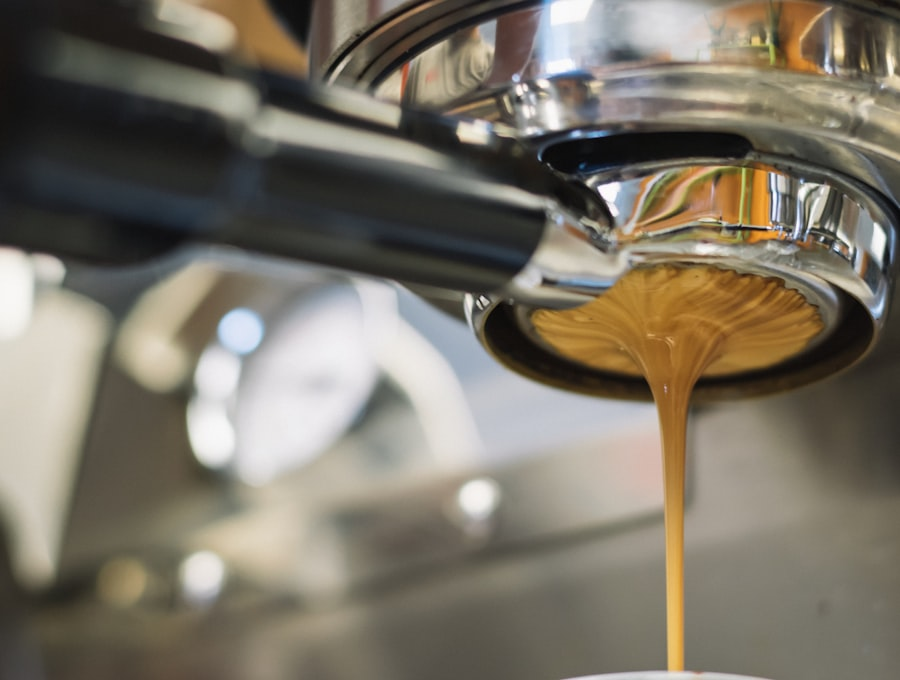
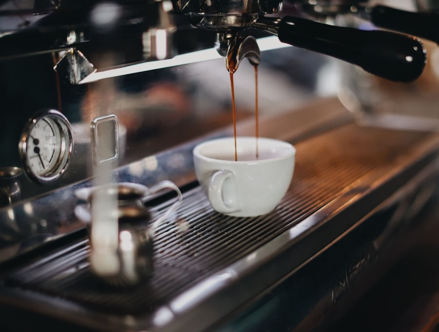
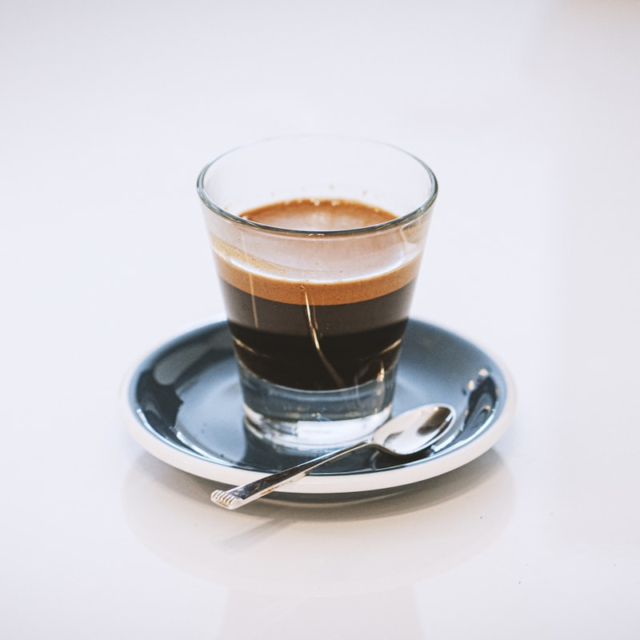
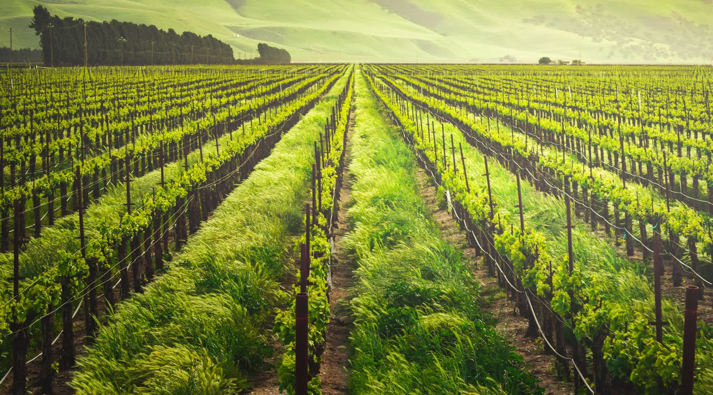
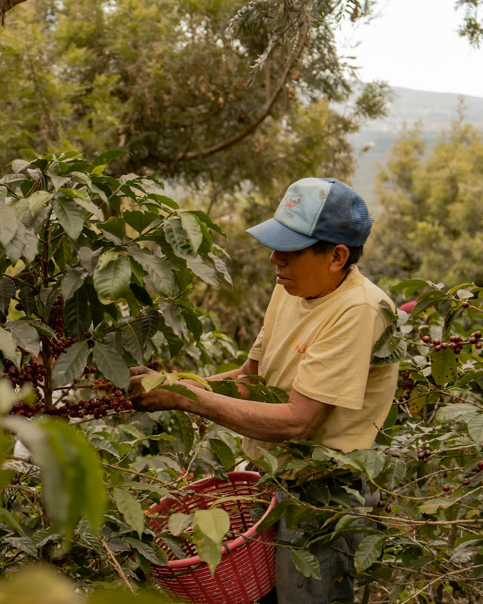
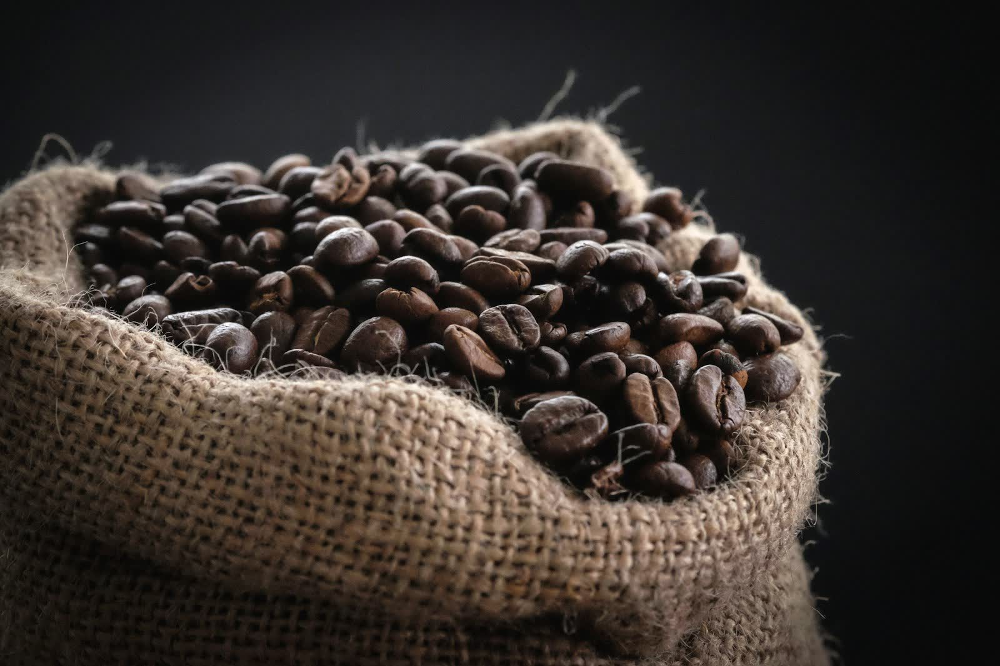
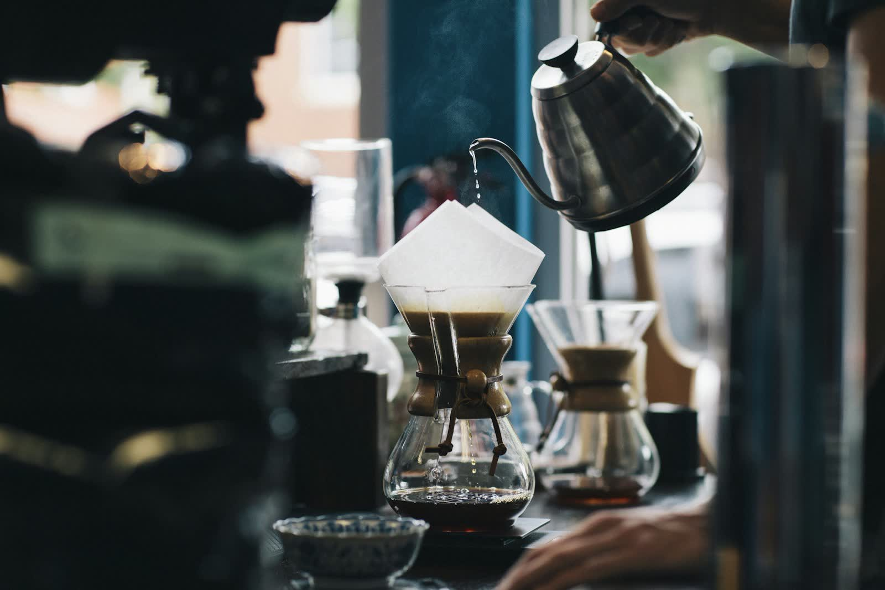
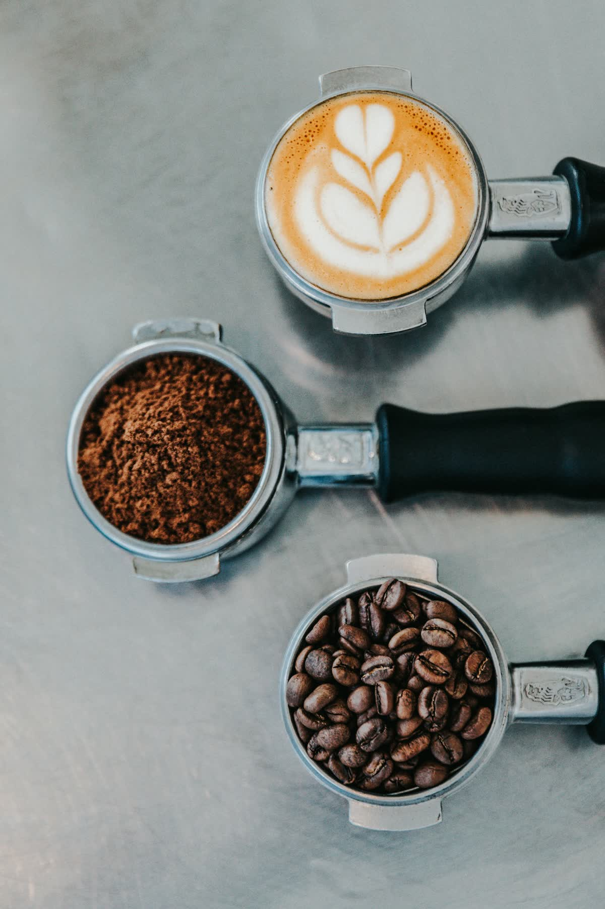
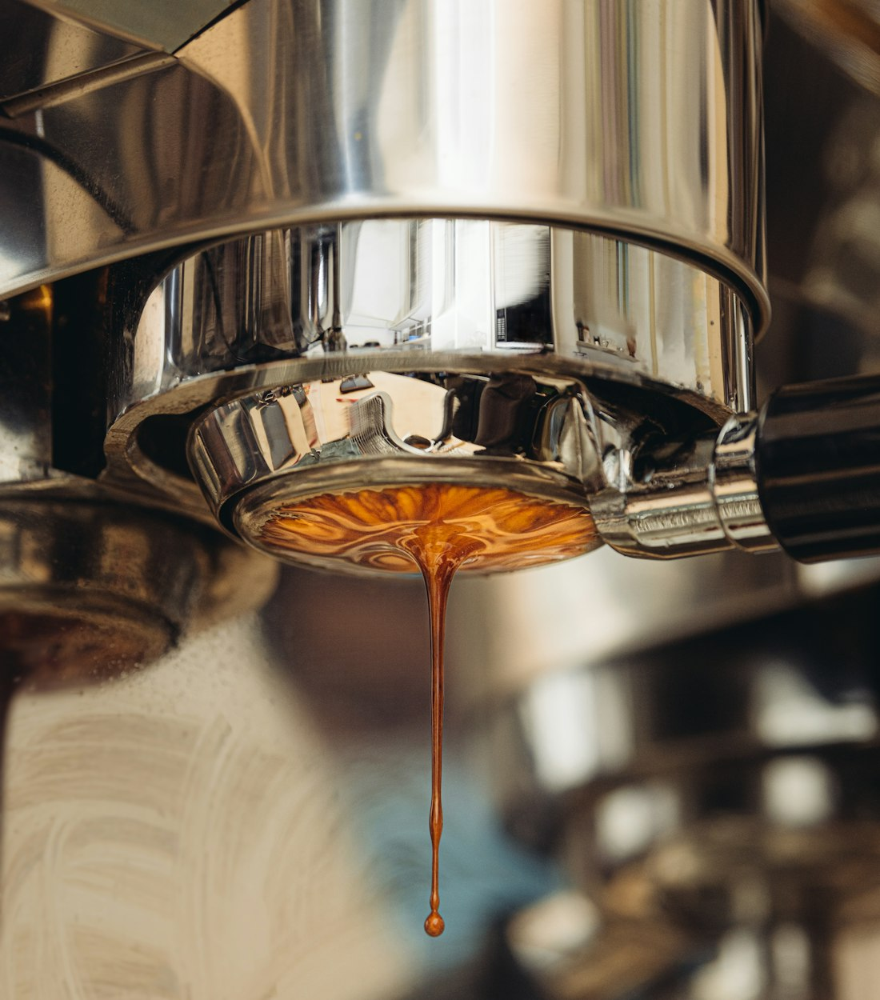

Favorito de la casa1.450 msnmTáchiraSCA 86
Lote Los Andes
Panela | Mandarina | Cacao
Tueste medio · Proceso lavado
Precio Ref.
Pedir
Destacado — Microlote Reserva | Fresa | Vino tinto | Chocolate oscuro
Tienda 豆 Café de origen
Trabajamos lotes pequeños de fincas de altura en Táchira, Mérida y Trujillo. Cada uno pasa por mesa de cata con protocolo SCA antes de tostarse. Escoge el tuyo y lo coordinamos por WhatsApp.

Favorito de la casaPanela | Mandarina | Cacao
Tueste medio · Proceso lavado

Durazno | Miel | Almendra
Tueste claro · Proceso honey
Fresa | Vino tinto | Chocolate oscuro
Tueste claro · Natural de fermentación controlada
 Nuevo
Nuevo
Naranja | Caña | Nuez
Tueste medio · Proceso lavado

Flor de café | Papelón | Ciruela
Tueste claro · Proceso honey
 Favorito de barras
Favorito de barras
Cacao | Avellana | Caramelo
Tueste expresivo · Mezcla de casa para espresso
Origen 山 Los Andes de Venezuela
Detrás de Saltamontes está Raúl Martínez, caficultor, Q Arabica Grader y Q Processing Expert. Camina las fincas, evalúa cada lote en mesa de cata y lo tuesta para que sepa a lo que es.
Altura, sombra, cosecha a mano y procesos hechos con paciencia. Eso separa un café correcto de uno que no se te olvida.
Conversemos de origen


"Aquí siempre hubo café bueno. Lo que faltaba era gente terca que lo cuidara hasta el final."
Suscripción 定期便 Club Saltamontes
Eliges tus lotes y la frecuencia, nosotros tostamos y despachamos. Sin pasarelas ni formularios, todo se coordina directo por WhatsApp.

Formación 学 Cursos y catas
Nada de teoría de libro. Lo que se enseña es lo que pasa en la finca, en la mesa de cata y frente al tostador. Presencial o en línea.
Mayorista 卸 Para cafeterías
Si tienes una cafetería, un restaurante o un hotel, te acompañamos con el grano y con el equipo. No solo vendemos café, dejamos tu barra funcionando.

Criterio 証 Credenciales
Lo que dicen 声 Clientes
Cambiamos a los lotes de Saltamontes y los clientes lo notaron a la semana. El acompañamiento con los baristas marcó la diferencia.
Nos ayudaron a subir la finca de 79 a 85 puntos en una cosecha. Ahora sí vendemos como café de especialidad.
El curso de catación me abrió la cabeza. Nunca volví a tomar café igual. Explican clarísimo y sin poses.
El club es lo mejor que le pasó a mi cocina. Café recién tostado cada mes sin tener que pensarlo.
Asesorías
Finca · tueste · barra
Mayorista
Cafeterías y hoteles
Comunidad 仲間 Contacto
Compartimos catas, tips y la vida en la montaña con más de 28.000 personas. Síguenos en Instagram o escríbenos directo, respondemos nosotros mismos.
